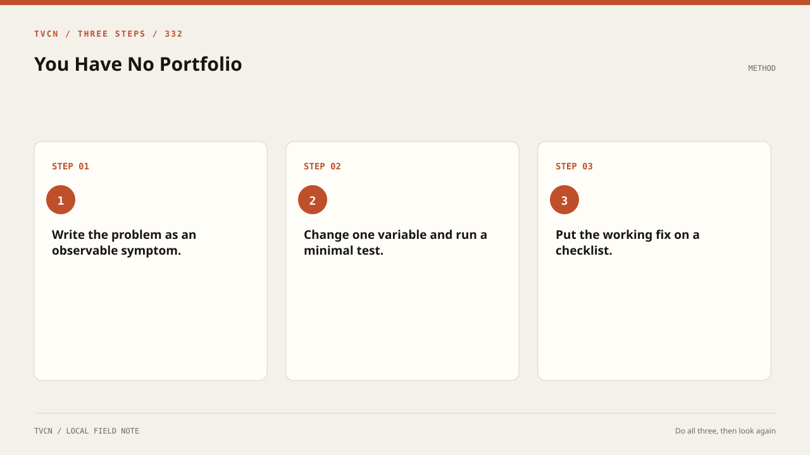

With no portfolio, make three small signed deliverables
Do not wait for a big project. Choose three films you can actually finish: a 60-second portrait, a 30-second product, a 15-second event. For each, state your role, gear and deliverable.
A portfolio is not a pile of films; it is three lines: problem, action, result. Clients want to see whether you solve their problem.
Limits
Do not label exercises as commercial cases. Invented clients, fake data or claiming others' shots invalidates the whole portfolio once noticed.
A credible portfolio without clients
A portfolio is not a client list; it is evidence of the problems you can solve. Without commercial work, fill it with three types: self-initiated films, shot reconstructions and process records. Each proves a different capability.
| Type | Proves | Minimum delivery |
|---|---|---|
| Self-initiated short | Story, directing, editing | One 60-second film + one-page intent |
| Shot reconstruction | Precision in camera, light, grade | Original frame + rebuilt frame + difference notes |
| Process record | Reliability, communication, delivery | One-page timeline + risk sheet + finished film |
Four blocks per project
- Problem: who hit what specific problem, in one sentence.
- Constraint: budget, time, location, crew; at least two.
- Action: the trade-off you made, not “I shot it.”
- Result: a verifiable change, or an honest “not launched / not tested.”
What not to include
- Client films without permission, clear faces of passersby, uncleared music.
- A duty list that says “shot and edited” with no judgment.
- Team work presented as solo; naming your role is more credible, not less.
Put three strongest projects on the first page, not twenty. Give each a reason to watch: a 30-second cut, a technical breakdown or a one-page review. Label self-initiated work as self-initiated; never imply a commercial commission.
Three-step flow

On set
Make three thirty-second films: people, objects, and one story. One skill per film.
Do this
No portfolio: make three thirty-second proof films. Show you can shoot a person, an object, and a story.
- Each film proves one skill: portrait interview, product texture, or narrative turn.
- Shoot with the same settings to show consistent quality.
- Add one page per film: goal, method, result, failure.
Avoid
Do not use a travel montage as a portfolio; the client cannot see what you can do.
Image note. Covers, diagrams and step images on this page are editorial illustrations or structure diagrams, not photographs of a test performed here; they are not evidence of measured gear performance. Where an image is AI-assisted, the caption says so. Read the test conditions in the text before treating an image as proof.